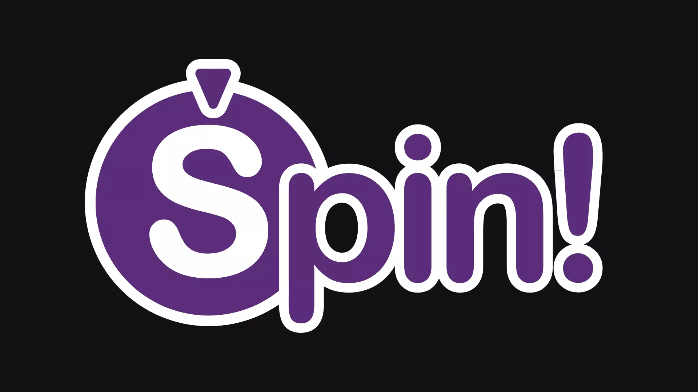
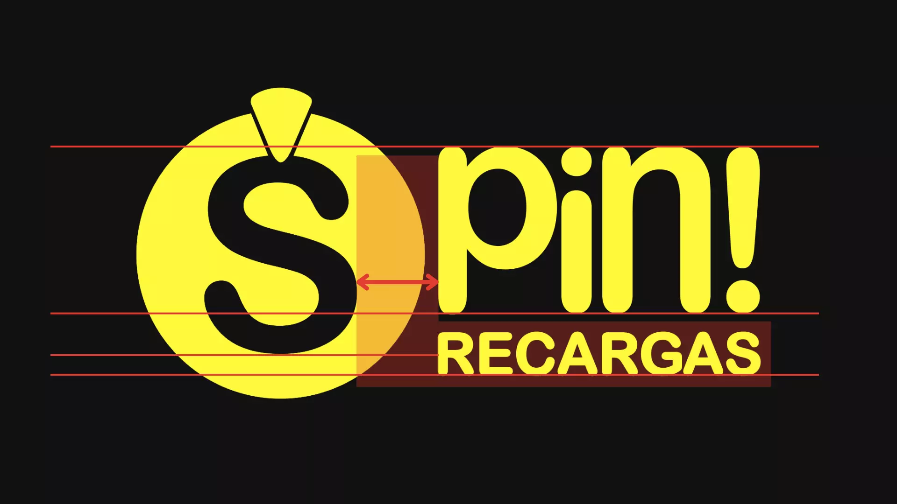
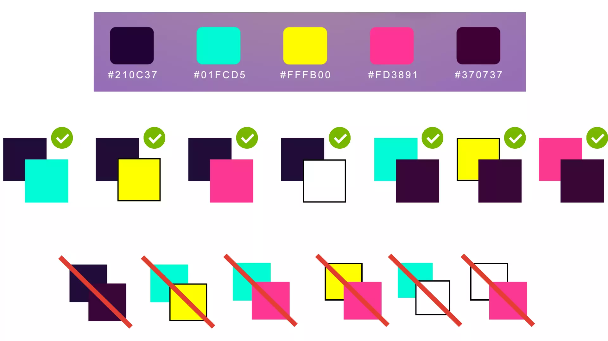
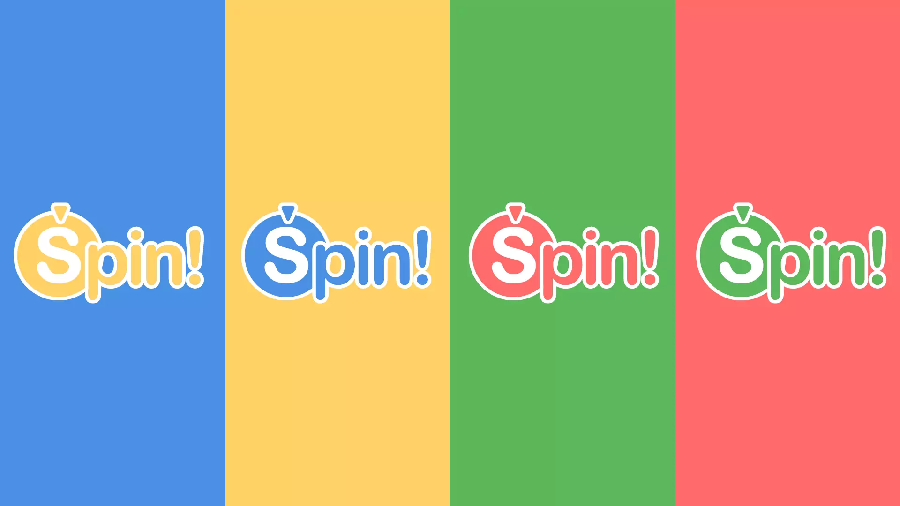

UI/UX & brand · 2025
Spin App
.webp)
Showing a skull that tells you you lost on the wheel could put people off buying.
01 · Context
There were few purchases
Spin App let users spin a wheel for a reward before paying for a top-up. I knew there were few purchases.

02 · Problem
But: I didn't have the data
I didn't know it from data: it was just intuition. (I know, in UX there's no intuition, there's user feedback.) The back-end developer was the one with access to those numbers.
03 · Solution
So: the wheel comes after paying
Flipping the flow was my idea: the wheel, after paying.
I based it on conventions already established in similar apps, which were part of my research, to see if we could attract customers from the competition and keep the learning curve gentle.
Before Spin, then pay
Open App → Spin the Wheel → Top Up
- The user spins before buying.
- A skull for a loss could put them off buying. This was my hypothesis, without data.
After Pay, then spin
Open App → Top Up → Payment confirmed → Spin the Wheel
- The user spins after a confirmed purchase.
- Every spin wins something: cashback, points, or double recharge.

04 · Result
The test: 3 people
I tested it with 3 people. One is a developer with deep knowledge of ergonomics, accessibility and UX, who gave me the green light. The other two, also developers, went through the flow in the Figma prototype.
The brand
Yellow
#FED06ABlue
#4C91E1Coral
#FF696CGreen
#5BB75APurple
#582B76
Colores muestreados de las imágenes actuales (paleta y logo): confirmar con los valores del Figma.
- Typeface
- Por confirmar (muestra en la fuente del sistema)
- Weights
- Por confirmar
- Use
- Titles and UI


In UX there's no intuition: there's user feedback.
Le détail
Brand Evolution
The original brand used clashing neon colors. I made a calmer palette that still feels playful, and a logo that suggests movement.


UI Evolution
I replaced the cluttered list view with cards. "Top Up" is the most visible action. The country code is filled in from the contact's number, which removes one step from every transaction.
What I would have measured
The purchases made, how many users came back and how often, and how long they spent on each screen (if possible).